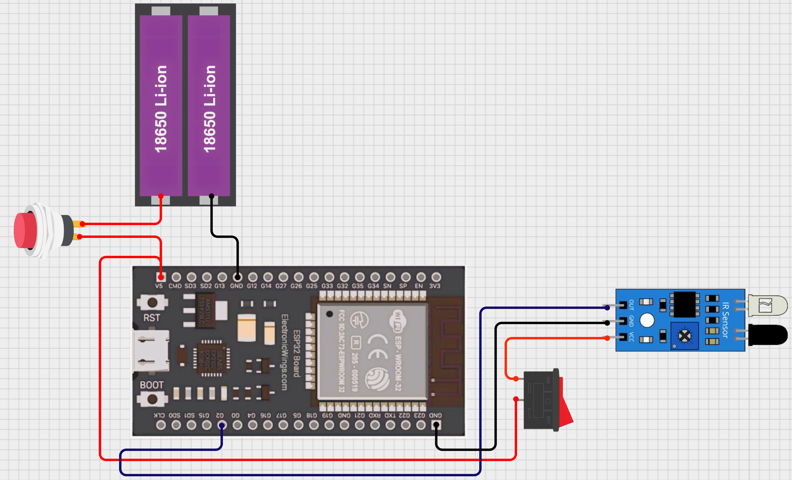
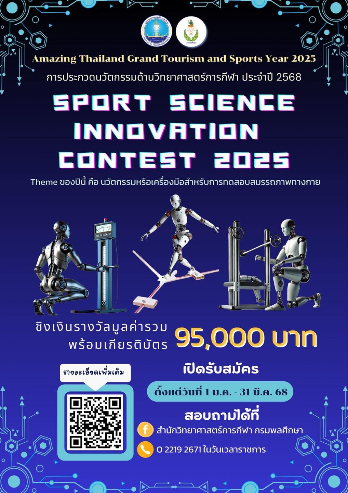

SPORT SCIENCE INNOVATION CONTEST 2025
Smart Multi-stage Fitness Test
Smart Multi-Stage Fitness Test:
The Smart Multi-Stage Fitness Test is an advanced system designed to modernize the traditional Beep Test (Multi-Stage Fitness Test) by integrating cutting-edge technologies such as IoT (Internet of Things), and real-time data processing. This project provides an automated, accurate, and intelligent approach to monitoring athletes' endurance, eliminating human errors, and enhancing test efficiency.
🚀 Key Benefits & Advantages
✅ 1. Automated & Accurate Data Collection Traditional fitness tests rely on manual tracking, which can be inaccurate due to human error. This system utilizes ESP32 microcontrollers and infrared sensors (E18-D80NK) to precisely detect when athletes cross designated checkpoints, ensuring reliable results.
✅ 2. Real-Time Performance Monitoring Using Python and MQTT, the system processes live data from the sensors and displays the athletes' status in real time. This allows coaches and athletes to instantly track performance, helping with immediate feedback.
✅ 3. Smart Failure Detection & Automated Alerts The system automatically identifies athletes who fail to reach the checkpoint in time. A visual indicator (green/red highlights) and audio alert announce the failing athlete's name, making the test more structured and eliminating subjective decisions.
✅ 4. Wireless Communication & Multi-Player Support ESP32 devices communicate wirelessly via MQTT, allowing real-time transmission of sensor data to the main system. Supports up to 10 athletes simultaneously, each assigned specific sensors, making it ideal for team assessments.

💡 Technologies Used in the Project
- ESP32 microcontrollers communicate wirelessly via MQTT, sending real-time signals when athletes cross the checkpoints.
- Allows seamless multi-player support without needing complex wiring.
- Highly sensitive sensors detect athletes passing through the checkpoints with precision.
- Provide accurate data collection for performance monitoring.
- Python-based GUI displays real-time data and athlete status during the test.
- Enables coaches to monitor performance and identify failing athletes instantly.
📡 IoT (ESP32 & MQTT)
🔍 Infrared Sensors (E18-D80NK)
🐍 Python GUI (PyQt)

🌟 Why This Project Matters?
Traditional fitness tests are essential for evaluating athletes' endurance and performance. However, manual tracking can be prone to errors, leading to inaccurate results and subjective decisions. By integrating IoT and real-time data processing, the Smart Multi-Stage Fitness Test offers a reliable, automated, and intelligent solution to modernize fitness testing.
This project aims to enhance the accuracy, efficiency, and objectivity of fitness assessments.
